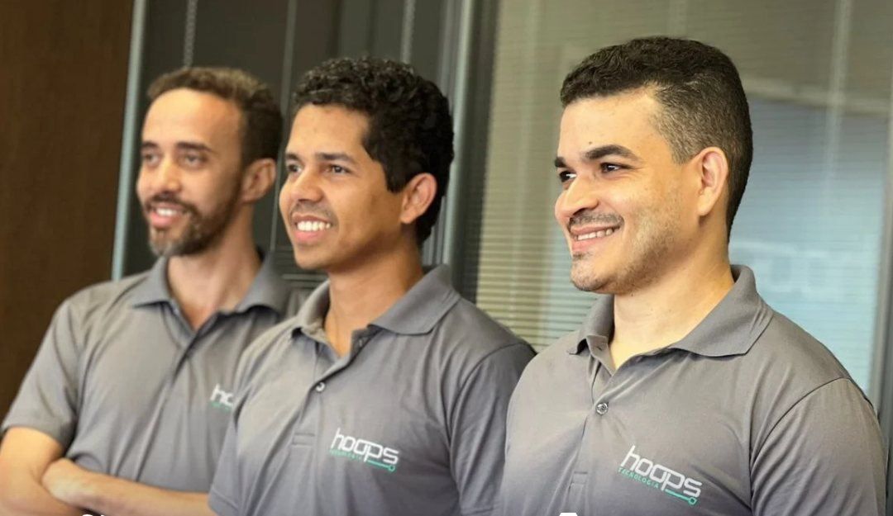

NOC 24/7
Sua rede acompanhada o tempo todo, para agir quando algo foge do normal, antes de virar parada.
NOC e suporte de TI para empresas
Sua rede monitorada de dia, de noite e no fim de semana.
Simulação ilustrativa
Por que a Hoops
A rede acompanhada de dia, de noite e no fim de semana.
Barreiras contra ameaças e backup com Acronis.
A Hoops avalia a sua rede e mostra onde estão os riscos.
Especialistas da Hoops cuidam da sua rede.


O custo de parar
Alguém liga quando já parou. Tempo perdido, suporte de emergência e prejuízo.
Alguém olha antes de parar. A falha é tratada antes de chegar até você.
Serviços
Sua rede acompanhada o tempo todo, para agir quando algo foge do normal, antes de virar parada.
A Hoops faz a gestão do seu backup corporativo com Acronis, para que os dados possam ser recuperados se o pior acontecer.
Barreiras que filtram ameaças antes que elas cheguem à caixa de entrada, com firewalls, monitoramento e auditorias.
Entregue a gestão da sua infraestrutura de tecnologia a especialistas, do suporte técnico à manutenção.
Infraestrutura confiável e escalável para os seus sistemas e aplicações.
Segmentos
PDV, notas travadas, fila parada
Ver TI para varejo
e-Social, dados fiscais, LGPD
Ver TI para contabilidades
Chão de fábrica, pontos críticos, visita técnica
Ver TI para indústriaComo funciona
Um caminho claro para sair do improviso e chegar a uma rede acompanhada.
A Hoops avalia a sua rede e mostra onde estão os riscos.
Você recebe o que precisa ser feito, com a proposta para a sua empresa.
A Hoops coloca o plano em prática e conecta sua rede ao monitoramento.
Sua rede passa a ser acompanhada de dia, de noite e no fim de semana.

Quem cuida da sua rede
Perguntas frequentes
Depende do tamanho da sua rede e do que o diagnóstico encontrar. Por isso não há tabela: primeiro vem o diagnóstico gratuito, depois uma proposta feita para a sua empresa.
Não necessariamente. O diagnóstico mostra o que está funcionando e o que precisa mudar. A decisão continua sendo sua.
O monitoramento continua à noite e no fim de semana. Como cada alerta é tratado fica definido no plano da sua empresa.
Diagnóstico gratuito